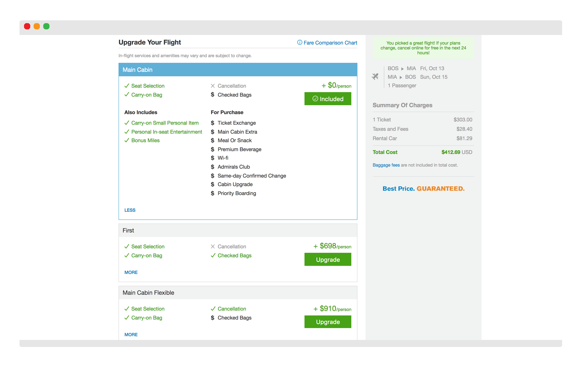
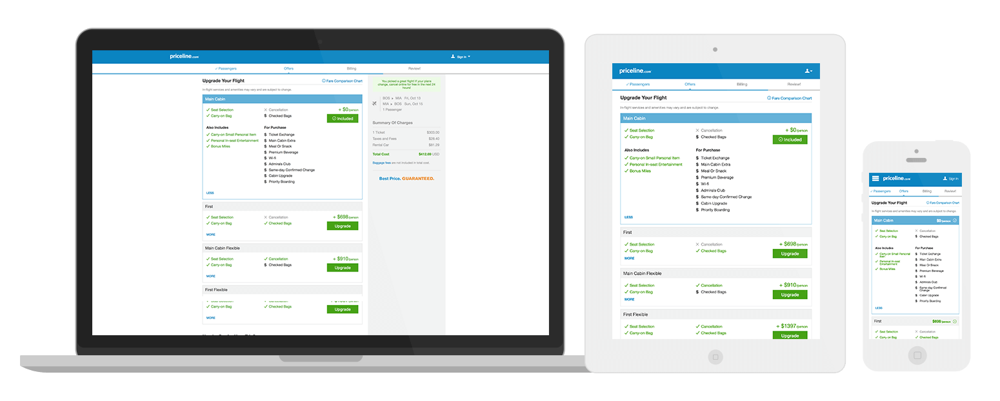
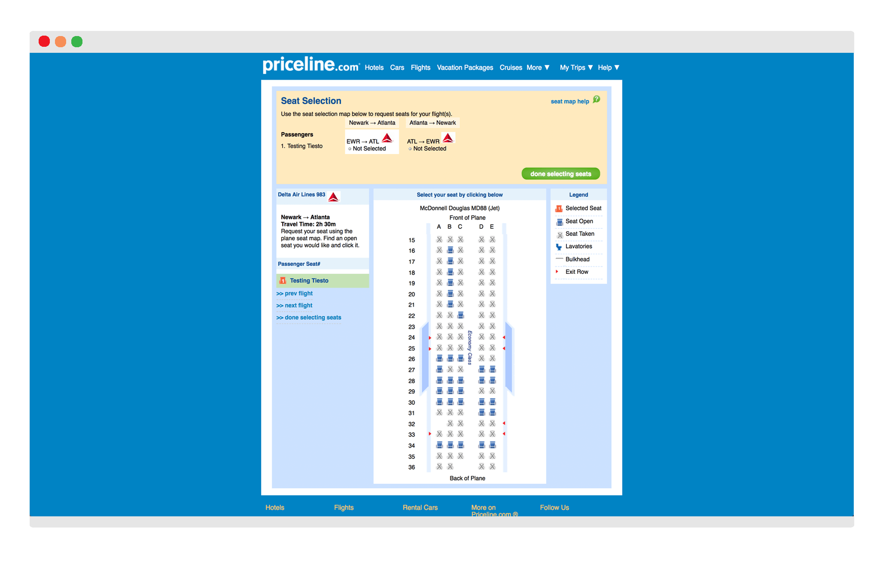
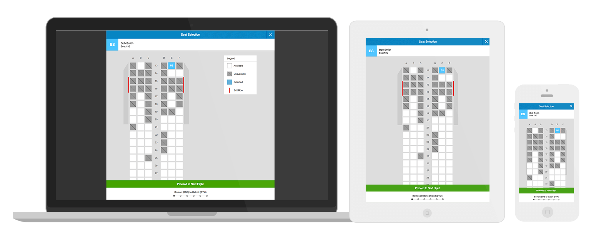

Fare Families
One feature that our Flights application was lacking was the ability for our customers to choose a fare family (or cabin class) for their flight itinerary.
The goal here was to inform the user of what amenity package was already included and also, what other packages were offered. So as not to disrupt the existing experience and the user flow, the Fare Families module was designed inside the pre-existing Offers tab with the fares being displayed as pre-collapsed buckets.

In my iterative approach to designing this module, I had to fulfill two priorities—allow the user to find the best deal, and from a business standpoint, to upsell.
In order to do this, this design offered an at-a-glance look of what amenities were offered at different price points. To effectively display all the different types of amenities a fare had, I decided on using collapsible buckets because it would preserve the real estate of the page and allow users the ability to quickly make a comparison in the collapsed state. And instead of combining all the amenities into just one category, I reasoned that it would be easier for users to scan if the amenities were separated into their respective groups.

Each fare serves as a button so users can click comfortably on all devices. To show that a fare has been selected, I opted for a visual indicator like a blue border and used the button to convey the status of the fare (statuses are "Included", "Added" and "Upgrade").
Steps to visit the site in the wild:
- 1. Click here to get to the Flights checkout experience
- 2. Fill out your passenger details
- 3. Continue to the "Offers" page
Seat Selection
In an effort to improve the overall Flights experience, one of our customers' pain points was the seat selection experience. Previously, customers were only able to comfortably select seats on desktop, they were inundated with useless information, and confused by the overall selection process. Also, up until this redesign, a responsive experience with a mobile-first approach was yet to be implemented.

For the seat selection feature, there were some development constraints that we had to work with and so our best approach was to create the experience in a faux modal so users would think they were still in the Checkout flow.

For this feature, I was tasked with prototyping our seat selection ideas and deciding on the visual aspects. Keeping in mind that this time around, the seat selection experience had to be mobile-friendly, we decided that a simple flat interface with seats depicted as squares would best fit the customers' needs. To simplify the interface, we relied heavily on the header and footer to indicate what and who the seat is being chosen for.

In this revamped experience, we were able to do away with information that wasn't necessary to the customer's decision-making while streamlining the process.
Steps to visit the site in the wild:
- 1. Click here to get to the Flights checkout experience
- 2. Fill out your passenger details
- 3. Continue to the "Offers" page
- 4. Choose any fare after "Main Cabin"
- 5. A notification will drop down asking if you'd like to select seats, click "Yes"